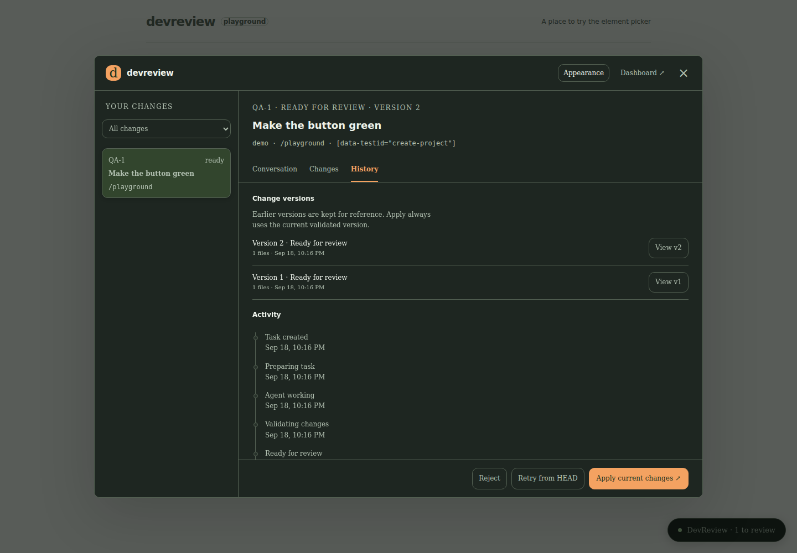

Project settings
Make room for your next idea.
Point at your UI. Tell your agent what to change.
View on GitHubEarly alpha · Build from source
Make room for your next idea.
Select the part you want to change.
Describe it in your own words.
Check the changes, then apply.
Feedback, replies, and previous versions stay together. Come back to a change without starting the explanation over.

No. Select the element and describe what you'd like to change. You can say “this box” or “that button” instead of looking up a component name.
Yes. NudgeThis is a local development tool. This website introduces the project; the application and your chosen agent run on your machine. Your agent's own network and data policies still apply.
Codex CLI has a dedicated integration. Other agents need a compatible ACP or custom adapter. You can also copy a request's context into any text-based agent. Connecting an agent creates a new conversation.
Yes. Project context lets you paste instructions or import Markdown and text files, including SKILL.md. Select them for a conversation and inspect the saved context for each version. Skills are shared as text; tools and supporting files are not installed automatically.
The project is open source under the MIT license. Any subscription or API usage required by your chosen agent is separate.
It's an early alpha you can build from source. The repository includes setup instructions and a local demo with a predefined agent, so you can explore the flow without model calls. Packaged downloads are not published yet.
Read the setup guideYou don't need to know what it's called.
View on GitHub